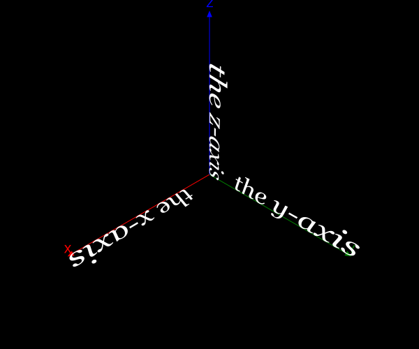
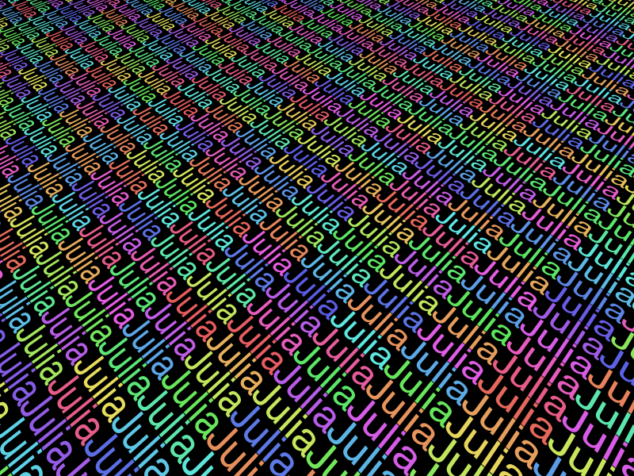

Text
Thebes provides a text3D() function that draws text in a 3D environment. For more information about using fonts and font selection, refer to the chapter in the Luxor documentation.
You specify the 3D location of the text, and optionally supply rotation (a tuple of three angles for x, y, and z) and text alignment (halign etc.). By default the text in Thebes (as in Luxor) runs along the x-axis, and it lies in the xy plane.
fontsize(50)
background("black")
origin()
setlinejoin("bevel")
eyepoint(Point3D(250, 250, 250))
perspective(400)
sethue("white")
axes3D(220)
fontsize(40)
fontface("Georgia-Italic")
text3D("the x-axis", Point3D(50, 0, 0))
text3D("the y-axis", Point3D(0, 50, 0), center=Point3D(0, 50, 0), rotation=(π/2, 0, π/2))
text3D("the z-axis", Point3D(0, 0, 0), rotation=(0, π/2, 0), halign=:right)
You can also use some of Luxor's text functions, such as textextents(), which helps you get the (2D) dimensions of text.
eyepoint(Point3D(250, 250, 550))
perspective(500)
fontsize(50)
te = textextents("Julia")
for y in -1200:te[3]:1200
for x in -1200:te[4]:1200
sethue(HSB(mod(x*y, 360), .6, .9))
text3D("Julia", Point3D(x, y, 0), center=Point3D(x, y, 0), rotation=(0,0,π/2))
end
end
Thebes.text3D — Functiontext3D(str, pt::Point3D;
halign = :left,
valign = :baseline,
center = Point3D(0, 0, 0),
rotation = (0, 0, 0))Draw text at point pt, lying in the plane of the x axis. Angles in rotation rotate the text. The center of rotation defaults to Point3D(0, 0, 0).
Uses current fontface() and fontsize() settings.
TODO Make sense of it all.